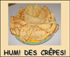
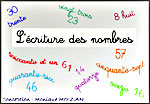

Ces exercices s'adressent à des lecteurs entrés dans une lecture de phrases simples mais ne maîtrisant pas bien les sons complexes. Ces sons sont travaillés, tant en lecture qu'à l'écrit. Les thèmes choisis se rapportent aux marques du temps (saisons, fêtes populaires, évènements) qui intéressent les enfants ou jeunes et qui aident à fixer des repères, à enrichir le vocabulaire. Il permettent un élargissement vers d'autres sujets d'intérêts.
Quand vous "lancez l'application", les exercices en ligne s'ouvrent dans une nouvelle fenêtre. Si elle ne s'ouvre pas c'est qu'un pare-feu est activé. Vous devez alors autoriser l'ouverture de la nouvelle fenêtre en cliquant sur la barre qui s'affiche en haut de votre navigateur.
C'est la rentrée : Télécharger
Télécharger - Lancer l'application
- Lancer l'application
Lire et écrire des mots autour du thème de la rentrée des classes. Approche de la notion de verbe.
L'automne :  Télécharger
Télécharger - Lancer l'application
- Lancer l'application
Nouvelle version (octobre 2012)
Lire et écrire sur le thème de l'automne. Etude des sons complexes "gn" et "euil - euille".
La photo : "Forêt au petit matin" est de Patricia NEY sur le site : http://www.fond-ecran-image.com/galerie-membre/photo-foret.html
Avant Noël : Télécharger - Lancer l'application
- Lancer l'application
Apprendre à remplir un chèque.
Noël : Télécharger - Lancer l'application
- Lancer l'application
Lire et écrire sur le thème de Noël. Etude des sons complexes "br, cr, tr etc.", pluriel des noms, pluriel des verbes.
La Galette : Télécharger - Lancer l'application
- Lancer l'application
Lire et écrire des phrases simples autour du thème de la galette des rois.
Etude du son complexe "ette".
L'Hiver : Télécharger - Lancer l'application
- Lancer l'application
Lire et écrire des phrases simples autour du thème de l’hiver.
 Révision de quelques sons complexes.
Révision de quelques sons complexes.
 Etude de " l’ "
Etude de " l’ "
Les crêpes :  Télécharger - Lancer l'application
- Lancer l'application
Lire et écrire des phrases simples autour du thème des crêpes.
C'est le Printemps : Télécharger - Lancer l'application
- Lancer l'application
Des mots avec "ill" et rappel de quelques sons complexes.
C'est Pâques :  Télécharger
Télécharger - Lancer l'application
- Lancer l'application
Lire et écrire des phrases simples autour du thème de Pâques.
Etude du son complexe "in".
Sur le thème du printemps, vous trouverez dans la rubrique "Lire niveau2" des applications qui peuvent être utilisées en désactivant le son en bas et à droite du logiciel.
Le 1er mai : Télécharger - Lancer l'application
- Lancer l'application
Lire et écrire des phrases simples autour du thème du muguet. Etude du son complexe "et" comme dans muguet.
Les animaux de la ferme et leurs petits : Télécharger - Lancer l'application
- Lancer l'application
Lire et écrire le nom des animaux de la ferme et leurs petits.
Une famille au bord de la Marne : Télécharger - Lancer l'application
- Lancer l'application
L'écriture des nombres :  Télécharger - Lancer l'application
- Lancer l'application
Lire, écrire les nombres, remplir un chèque. Utilise la police Cursive standard.